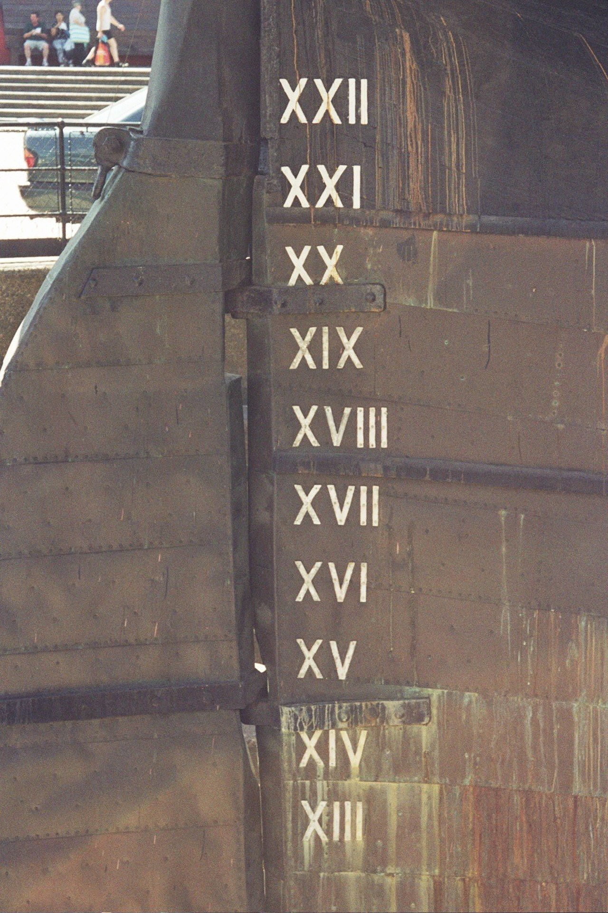

CityLoop Quest Gand


Le Moyen Âge gantois est celui des drapiers, des bateliers et des conflits de pouvoir. Entre le XIIe et le XIVe siècle, la production de drap enrichit les corporations et permet à la ville de négocier durement avec les comtes de Flandre. Les cloches du Beffroi rythment le travail et servent d’alarme, tandis que les chartes communales sont gardées comme des trésors politiques. En 1302, les milices urbaines flamandes participent à la bataille des Éperons d’or ; quelques décennies plus tard, Jacob van Artevelde impose Gand comme un acteur diplomatique durant la guerre de Cent Ans.
Les XIVe et XVe siècles voient alterner prospérité artistique et affrontements. Les ducs de Bourgogne cherchent à centraliser leurs territoires, mais Gand résiste souvent. En 1453, la bataille de Gavere écrase une révolte contre Philippe le Bon. Pourtant, la richesse demeure visible : en 1432, l’Agneau mystique des frères Van Eyck est inauguré dans l’église Saint-Jean, future cathédrale Saint-Bavon. La précision de ses paysages, étoffes et visages correspond à une société urbaine sûre de sa puissance autant qu’à un chef-d’œuvre religieux.
Le XVIe siècle est une période de rupture. Charles Quint naît au Prinsenhof en 1500, mais sa relation avec Gand devient conflictuelle. Après une nouvelle rébellion fiscale, il revient en 1540 et humilie les notables ; les privilèges sont réduits et l’abbaye Saint-Bavon est transformée en forteresse. Les tensions religieuses s’ajoutent aux luttes politiques : l’iconoclasme de 1566 endommage églises et œuvres, puis la République calviniste de Gand gouverne la ville entre 1577 et 1584 avant la reconquête espagnole.
Aux XVIIIe et XIXe siècles, Gand passe de la domination autrichienne à la période française, puis au Royaume-Uni des Pays-Bas et à la Belgique indépendante. L’université est fondée en 1817 sous Guillaume Ier. L’industrialisation transforme radicalement la ville : machines à filer, usines et quartiers ouvriers gagnent les rives. Lieven Bauwens devient le symbole, à la fois admiré et controversé, de cette modernisation textile. La misère sociale nourrit ensuite coopératives, syndicats et mouvements politiques puissants.
Le XXe siècle apporte deux occupations allemandes, les destructions limitées mais les pénuries profondes, puis la désindustrialisation. L’Exposition universelle de 1913 avait déjà remodelé des monuments et créé le Citadelpark ; après 1945, l’automobile envahit le centre avant qu’une politique de restauration et de piétonnisation ne change la trajectoire. Depuis la fin du XXe siècle, Gand combine patrimoine, université, technologie, culture et reconversion portuaire. Ses grandes périodes ne s’effacent pas : elles coexistent dans des bâtiments dont les usages ont parfois changé cinq ou six fois.
La Première Guerre mondiale épargne Gand des destructions massives, mais l’occupation bouleverse l’économie et la vie quotidienne. L’entre-deux-guerres apporte logements sociaux, infrastructures et modernisation, tout en maintenant de fortes tensions sociales. Durant la Seconde Guerre mondiale, la ville est de nouveau occupée ; la communauté juive est persécutée et les réseaux de résistance paient un lourd tribut. La libération de septembre 1944 ouvre une période de reconstruction industrielle, mais aussi de transformations rapides de la mobilité et de l’habitat.
Dans les décennies 1960 et 1970, l’automobile envahit places et quais que l’on admire aujourd’hui comme des espaces historiques. Des bâtiments anciens disparaissent, tandis que d’autres sont sauvés grâce à une conscience patrimoniale plus exigeante. La reconquête du centre s’accélère ensuite : restauration des façades, remise en eau de certains tronçons, piétonnisation, reconversion des friches et développement culturel. Le plan de circulation de 1997 constitue un tournant important en réduisant le trafic de transit au cœur de la ville. Le Gand contemporain ne résulte donc pas d’une conservation immobile, mais d’une série de choix parfois conflictuels entre industrie, logement, patrimoine, université et qualité urbaine. Les cicatrices des anciens bras d’eau, les cheminées conservées et les logements aménagés dans les filatures permettent encore de suivre cette chronologie sans quitter la rue. Chaque époque a déplacé les fonctions de Gand, mais aucune n’a totalement effacé la précédente.